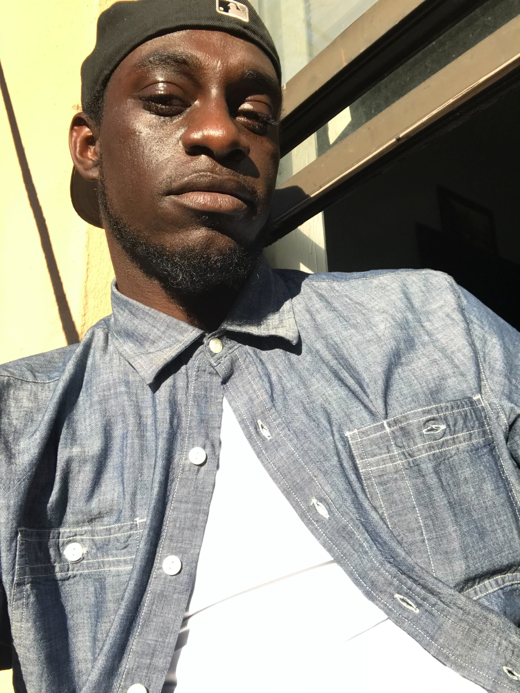

Hi! I'm Mario Thinkful
I am software developer living in NYC.
As a former photographer and a new found developer. I'm interested in:
- Creating web portfolios for models and other businesses.
- Learning different ways to build a website from scratch.
- Working with like-minded web developers on projects.
Please take a look at my website and feel free to Contact Me!
About Mario
After I graduated high school I started working in retail and quickly realized it wasn't really my passion. I have always spent most of my time in front of a computer and have always wanted to learn how to code and create websites. I became interested in taking pictures so I started studying photography, and in doing so got in contact with models who were looking to create a website for themselves. I then realized that I could combine my love of photography and coding by creating websites for models or anyone looking to create a website.
Outside of collaborating with other software developers I am interested in music and take that passion with me when I code.
As a student of Thinkful, I've begun my journey as a software developer and it's been amazing. I've truly learned so much from the program.
If you're looking to hire a new developer who is very team friendly, and loves to work on projects day in and day out please reach out! I would love the opportunity to collaborate with other developers on anything. I'm a student first before anything else and absolutely love working.
id="contactME">CONTACT MARIO
I'd love to hear from you! Please feel free to contact me or follow me:
- LinkedIn:
- Github: